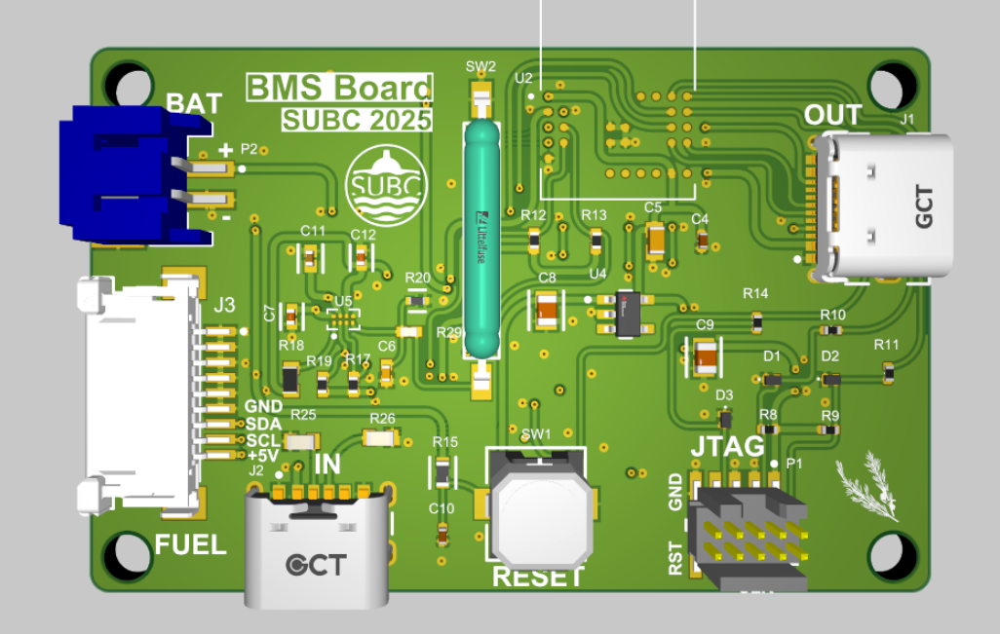

Project 05 / Battery management
SUBC BMS
A battery management system project for SUBC, currently in development. The image shows the previous SUBC team's 2025 board as a reference; my current design is in progress.
Full documentation on GitHub
- Status
- In progress
- Tools
- To be documented